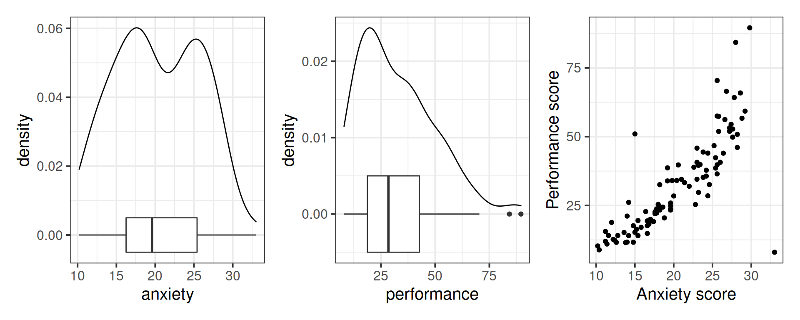
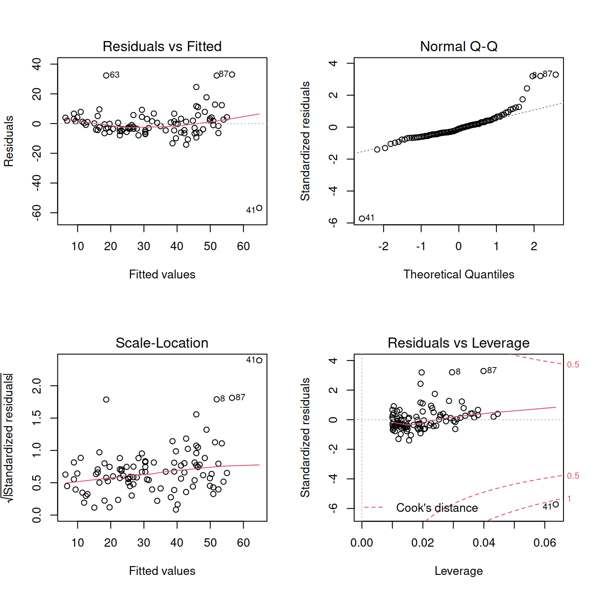
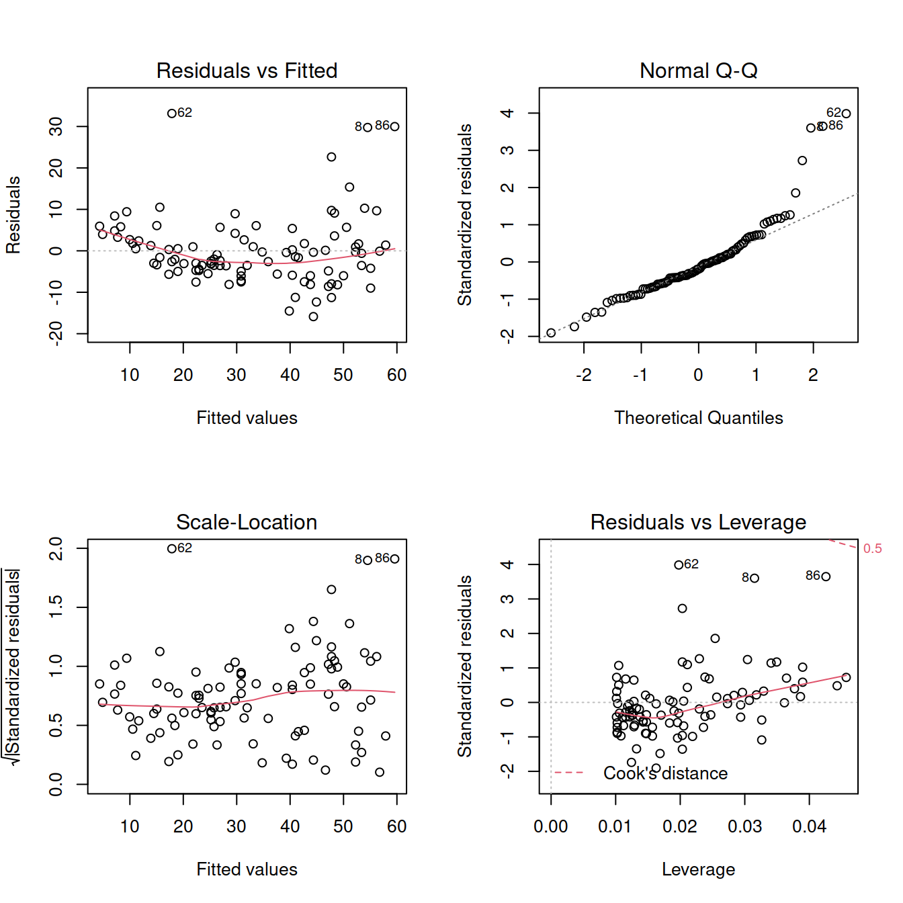
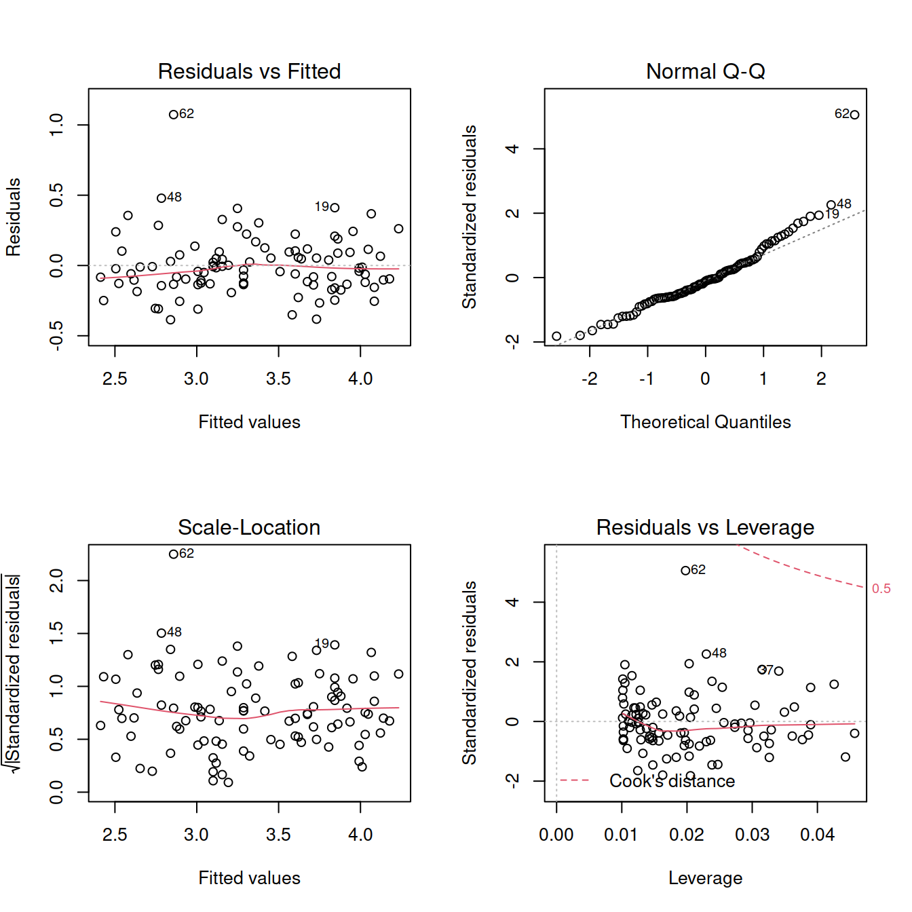
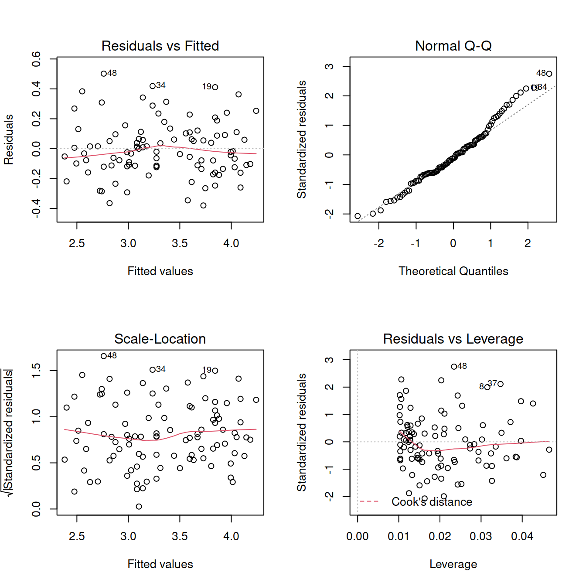
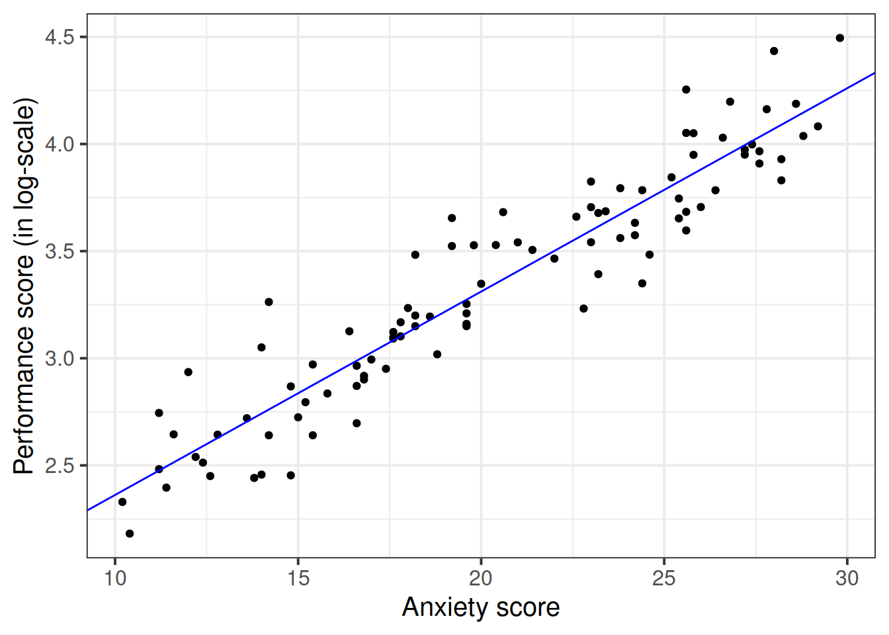

Writing-up
LEARNING OBJECTIVES
- Understand the difference between outliers and influential points.
- Understand and apply methods to detect outliers and influential points.
- Comment on the issues of correlation vs causation and generalisability of the sample results.
- Run a full simple regression analysis from start to finish and to correctly interpret the results.
Data and research question
A school is interested in investigating how children’ performance is affected by anxiety.
Consider the following data on anxiety and academic performance for a sample of 100 children.
Analysis
In today’s lab the analysis will be provided, the task will be for you to correctly report what has been done.
Read the data:
library(tidyverse)
library(car)
anxperf <- read_csv(file = 'https://uoepsy.github.io/data/anx_perf.csv')
head(anxperf)## # A tibble: 6 x 2
## anxiety performance
## <dbl> <dbl>
## 1 17 20.0
## 2 10.2 10.3
## 3 26.4 44.0
## 4 25.4 38.6
## 5 16.4 22.8
## 6 12.2 12.7Investigate the marginal distributions of each variable and the relationship between the two variables.
Note: The patchwork library is used to combine ggplots into a single figure made up of multiple panels. You can add them using + or |, and put plots underneath with the / operator.
library(patchwork)
plt_anx <- ggplot(anxperf, aes(x = anxiety)) +
geom_density() +
geom_boxplot(width = 0.01)
plt_perf <- ggplot(anxperf, aes(x = performance)) +
geom_density() +
geom_boxplot(width = 0.01)
plt_joint <- ggplot(anxperf, aes(x = anxiety, y = performance)) +
geom_point() +
labs(x = 'Anxiety score', y = 'Performance score')
plt_anx | plt_perf | plt_joint
anxperf %>%
summarise(M_anx = mean(anxiety),
SD_anx = sd(anxiety),
MED_anx = median(anxiety),
IQR_anx = IQR(anxiety),
M_perf = mean(performance),
SD_perf = sd(performance),
MED_perf = median(performance),
IQR_perf = IQR(performance))## # A tibble: 1 x 8
## M_anx SD_anx MED_anx IQR_anx M_perf SD_perf MED_perf IQR_perf
## <dbl> <dbl> <dbl> <dbl> <dbl> <dbl> <dbl> <dbl>
## 1 20.4 5.49 19.6 9.15 32.4 17.4 28.5 24.0Correlation between the variables:
cor(anxperf)## anxiety performance
## anxiety 1.0000000 0.8098636
## performance 0.8098636 1.0000000Linear model:
mdl1 <- lm(performance ~ 1 + anxiety, data = anxperf)
summary(mdl1)##
## Call:
## lm(formula = performance ~ 1 + anxiety, data = anxperf)
##
## Residuals:
## Min 1Q Median 3Q Max
## -56.754 -4.594 -1.003 3.251 33.005
##
## Coefficients:
## Estimate Std. Error t value Pr(>|t|)
## (Intercept) -19.8039 3.9512 -5.012 2.39e-06 ***
## anxiety 2.5624 0.1875 13.667 < 2e-16 ***
## ---
## Signif. codes: 0 '***' 0.001 '**' 0.01 '*' 0.05 '.' 0.1 ' ' 1
##
## Residual standard error: 10.24 on 98 degrees of freedom
## Multiple R-squared: 0.6559, Adjusted R-squared: 0.6524
## F-statistic: 186.8 on 1 and 98 DF, p-value: < 2.2e-16TIP
When you call plot() on a fitted model to show the diagnostic plots, you can display all four plots at once by telling R
par(mfrow = c(2,2))This means that each figure should be made of 2 by 2 plots.
To go back to one figure made by a single plot, just type"
par(mfrow = c(1,1))Note that this will not work with ggplot.
Diagnostics:
par(mfrow = c(2,2))
plot(mdl1)
im <- influence.measures(mdl1)
summary(im)## Potentially influential observations of
## lm(formula = performance ~ 1 + anxiety, data = anxperf) :
##
## dfb.1_ dfb.anxt dffit cov.r cook.d hat
## 2 0.08 -0.07 0.08 1.06_* 0.00 0.04
## 8 -0.37 0.48 0.59_* 0.84_* 0.16 0.03
## 19 -0.17 0.24 0.35 0.92_* 0.06 0.02
## 41 1.43_* -1.67_* -1.82_* 0.48_* 1.11_* 0.06_*
## 52 0.04 -0.04 0.04 1.07_* 0.00 0.04
## 63 0.41 -0.33 0.47_* 0.84_* 0.10 0.02
## 87 -0.50 0.61 0.71_* 0.84_* 0.22 0.04Focus on Cook’s distance for now:
anxperf <- anxperf %>%
slice(-41)Re-fit the model and check assumptions:
mdl2 <- lm(performance ~ 1 + anxiety, data = anxperf)
summary(mdl2)##
## Call:
## lm(formula = performance ~ 1 + anxiety, data = anxperf)
##
## Residuals:
## Min 1Q Median 3Q Max
## -15.873 -4.902 -1.587 2.984 33.137
##
## Coefficients:
## Estimate Std. Error t value Pr(>|t|)
## (Intercept) -24.4249 3.3066 -7.387 5.26e-11 ***
## anxiety 2.8192 0.1581 17.836 < 2e-16 ***
## ---
## Signif. codes: 0 '***' 0.001 '**' 0.01 '*' 0.05 '.' 0.1 ' ' 1
##
## Residual standard error: 8.398 on 97 degrees of freedom
## Multiple R-squared: 0.7663, Adjusted R-squared: 0.7639
## F-statistic: 318.1 on 1 and 97 DF, p-value: < 2.2e-16par(mfrow = c(2,2))
plot(mdl2)
ncvTest(mdl2)## Non-constant Variance Score Test
## Variance formula: ~ fitted.values
## Chisquare = 12.37983, Df = 1, p = 0.000434Try transforming the response:
anxperf <- anxperf %>%
mutate(log_performance = log(performance))
mdl3 <- lm(log_performance ~ 1 + anxiety, data = anxperf)
summary(mdl3)##
## Call:
## lm(formula = log_performance ~ 1 + anxiety, data = anxperf)
##
## Residuals:
## Min 1Q Median 3Q Max
## -0.38616 -0.12918 -0.02290 0.09671 1.07349
##
## Coefficients:
## Estimate Std. Error t value Pr(>|t|)
## (Intercept) 1.464804 0.084408 17.35 <2e-16 ***
## anxiety 0.092902 0.004035 23.02 <2e-16 ***
## ---
## Signif. codes: 0 '***' 0.001 '**' 0.01 '*' 0.05 '.' 0.1 ' ' 1
##
## Residual standard error: 0.2144 on 97 degrees of freedom
## Multiple R-squared: 0.8453, Adjusted R-squared: 0.8437
## F-statistic: 530.1 on 1 and 97 DF, p-value: < 2.2e-16par(mfrow = c(2,2))
plot(mdl3)
shapiro.test(mdl3$residuals)##
## Shapiro-Wilk normality test
##
## data: mdl3$residuals
## W = 0.9134, p-value = 7.033e-06Try removing outlier:
anxperf <- anxperf %>%
slice(-62)mdl4 <- lm(log_performance ~ 1 + anxiety, data = anxperf)
summary(mdl4)##
## Call:
## lm(formula = log_performance ~ 1 + anxiety, data = anxperf)
##
## Residuals:
## Min 1Q Median 3Q Max
## -0.3795 -0.1141 -0.0205 0.1008 0.5020
##
## Coefficients:
## Estimate Std. Error t value Pr(>|t|)
## (Intercept) 1.412733 0.073345 19.26 <2e-16 ***
## anxiety 0.094929 0.003497 27.14 <2e-16 ***
## ---
## Signif. codes: 0 '***' 0.001 '**' 0.01 '*' 0.05 '.' 0.1 ' ' 1
##
## Residual standard error: 0.1849 on 96 degrees of freedom
## Multiple R-squared: 0.8847, Adjusted R-squared: 0.8835
## F-statistic: 736.7 on 1 and 96 DF, p-value: < 2.2e-16par(mfrow = c(2,2))
plot(mdl4)
shapiro.test(mdl4$residuals)##
## Shapiro-Wilk normality test
##
## data: mdl4$residuals
## W = 0.97992, p-value = 0.1395ncvTest(mdl4)## Non-constant Variance Score Test
## Variance formula: ~ fitted.values
## Chisquare = 0.1958679, Df = 1, p = 0.65808Go back to figures with only one plot:
par(mfrow = c(1,1))Table for reporting:
library(sjPlot)
tab_model(mdl4)| log performance | |||
|---|---|---|---|
| Predictors | Estimates | CI | p |
| (Intercept) | 1.41 | 1.27 – 1.56 | <0.001 |
| anxiety | 0.09 | 0.09 – 0.10 | <0.001 |
| Observations | 98 | ||
| R2 / R2 adjusted | 0.885 / 0.884 | ||
Plot of the final model:
betas <- coef(mdl4)
ggplot(anxperf, aes(x = anxiety, y = log_performance)) +
geom_point() +
geom_abline(intercept = betas[1], slope = betas[2], color = 'blue') +
labs(x = 'Anxiety score', y = 'Performance score (in log-scale)')
Reporting
A good data analysis report should follow three steps: Think, Show, and Tell.
For a detailed explanation of each step, check this document.
Think
What do you know? What do you hope to learn? What did you learn during the exploratory analysis?
Describe the study design, the data collection strategy, etc.
- How many observational units? (If not mentioned above.)
- Are there any observations that have been excluded based on pre-defined criteria? How/why, and how many?
- Describe and visualise the variables of interest. How are they scored? have they been transformed at all?
- Describe and visualise relationships between variables. Report covariances/correlations.
- What type of statistical analysis do you use to answer the research question? (e.g., t-test, simple linear regression, multiple linear regression)
- Describe the model/analysis structure
- What is your outcome variable? What is its type?
- What are your predictors? What are their types?
- Any other specifics?
- Was there anything you had to do differently than planned during the analysis? Did the modelling highlight issues in your data?
- Did you have to do anything (e.g., transform any variables, exclude any observations) in order to meet assumptions?
Show
Show the mechanics and visualisations which will support your conclusions
Present and describe the model or test which you deemed best to answer your question.
Are the assumptions and conditions of your final test or model satisfied? For the final model (the one you report results from), were all assumptions met? (Hopefully yes, or there is more work to do…). Include evidence (tests or plots).

- Provide a table of results if applicable (for regression tables, try
tab_model()from the sjPlot package). - Provide plots if applicable.
Tell
Communicate your findings
- What do your results suggest about your research question?
- Make direct links from hypotheses to models (which bit is testing hypothesis)
- Be specific - which statistic did you use/what did the statistical test say? Comment on effect sizes.
- Make sure to include measurement units where applicable.
Put everything together
If you followed the steps above, it is just a matter of taking all answers to the above questions and combining them, in order to have a reasonable draft of a statistical report.
This information, however, is equivalent to the t-test for the significance of the slope as the F-statistic is the square t-statistic.↩